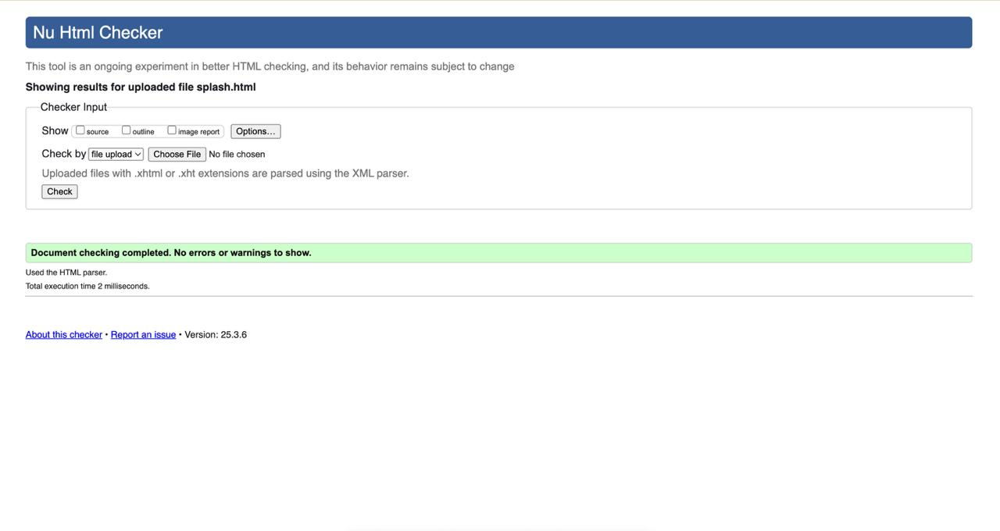
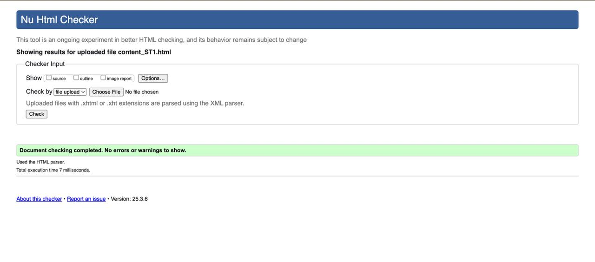

HTML and CSS Validation Results
This page documents the validation process for the Quality Education website, showing the results of W3C validation.
HTML ValidationHTML Validation
PASSED
All HTML pages were validated using the W3C Markup Validation Service.
 
Initial Issues Found
- Missing alt attributes on some images
- Unclosed div elements affecting layout
- Improper button alignment in mobile view
- Missing aria-labels for interactive elements
Fixes Implemented
- Added descriptive alt text to all images for accessibility
- Closed all unclosed div tags for proper layout rendering
- Used Flexbox and Grid for proper button alignment
- Added aria-labels to buttons and links for better accessibility
The style.css file was validated using the W3C CSS Validation Service to ensure it adheres to CSS3 standards.
Initial Issues Found
- Inconsistent heading hierarchy affecting SEO and accessibility
- Broken links in the footer navigation
- Text contrast issues in some sections
- Form elements missing proper labels
Fixes Implemented
- Reorganized heading levels for better structure (h1 → h2 → h3, etc.)
- Fixed all broken links and ensured they direct to the correct pages
- Adjusted color contrast to meet WCAG 2.1 AA standards
- Added proper
labelelements for all form fields
The website was checked using WAVE (Web Accessibility Evaluation Tool) to ensure it meets WCAG 2.1 accessibility guidelines.
Initial Issues Found
- Navigation menu not displaying correctly on smaller screens
- Images missing alt attributes, impacting accessibility
- Uneven padding/margins in sections causing misalignment
- Overlapping text in the hero section on mobile devices
Fixes Implemented
- Updated the navigation menu to use a responsive hamburger menu
- Added alt attributes to all images for screen reader support
- Standardized padding and margins for a consistent layout
- Adjusted font sizes and layout to prevent text overlap on mobile
The website was tested across multiple device sizes using Chrome DevTools and physical devices to ensure proper responsiveness.
Initial Issues Found
- Button styles inconsistent across pages
- Form elements misaligned on smaller screens
- Footer links not properly aligned
- Slow page load due to unoptimized images
Fixes Implemented
- Standardized button styles across all pages
- Used flexbox and media queries to properly align form elements
- Fixed footer layout to ensure proper alignment
- Compressed and optimized images for faster loading
Validation Tips & Best Practices
Based on our experience validating the Quality Education website, here are some recommended practices:
- Validate Early and Often: Don't wait until the end of development to check for validation issues.
- Use Browser DevTools: Built-in developer tools can catch many issues before formal validation.
- Test Accessibility: Use screen readers and keyboard navigation to ensure the site works for all users.
- Check Real Devices: Emulators are helpful, but testing on actual devices provides the best feedback.
- Keep a Validation Log: Document issues and fixes to help with future projects.